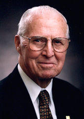

Dr. Norman Borlaug

American agronomist
Norman Ernest Borlaug was an American agronomist who led initiatives worldwide that contributed to the extensive increases in agricultural production termed the Green Revolution
Read More...